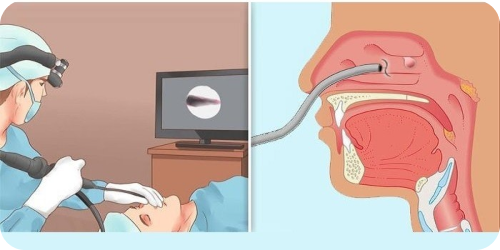

Діагностика

Діагностика хропіння – це важливий етап у встановленні правильного діагнозу та виборі оптимального лікування для пацієнтів. Наша мета – це врахування багатьох чинників, таких як локалізація звуку, інтенсивність, час появи та інші аспекти.
Скарги пацієнта
Фізичний огляд
Тести на ризик наявності СОАС
Інструментальна діагностика
Сліпендоскопія

Скарги пацієнта
Ваше здоров'я - пріоритет.
Своєчасна і точна інформація про ваші симптоми є надзвичайно важливою для правильної діагностики та надання вам належної медичної допомоги.

Фізичний огляд
Необхідне оцінювання вашого стану.
Фізичний огляд є важливою складовою будь-якого медичного обстеження. Він дозволяє лікарям отримати об'єктивну інформацію про ваш стан здоров'я, фізичні симптоми та показники ваших систем органів.
Тести визначення ризику наявності СОАС
- Шкала NoSAS
- Шкала STOP-BANG
- Берлінський опитувальник для виявлення апное сну
- Епвортська шкала сонливості
Для комплексної оцінки ступеня ризику наявності апное уві сні на первинній консультації пацієнта зі скаргами на хропіння ми склали спеціальний опитувальник, що включає:
- провідних скарг, характерних для СОАС;
- наявність коморбідних станів для СОАС;
- Епвортську шкалу сонливості та перелічені вище тести на визначення ризику наявності СОАС.
Сліпендоскопія
Переваги сліпендоскопії:
- динамічна оцінка сну
- пряма візуалізація локалізації обструкції
- точне визначення структур, які є причиною звуження верхніх дихальних шляхів, що дозволяє вибрати оптимальну тактику хірургічного втручання
- оцінка можливості застосування консервативних методів лікування
Інструментальна діагностика

Моніторингова нічна комп'ютерна пульсоксиметрія
Встановлення датчика не потребує спеціальних знань, тому пацієнти зазвичай виконують це дослідження вдома: перед сном закріплюють пульсоксиметр на зап'ясті і надягають датчик на палець. По завершенню нічного сну вони знімають його і передають лікарю для аналізу даних.
Кардіо-респіраторний моніторинг
Мінімально необхідне дослідження для встановлення клінічного діагнозу, але не дозволяє диференціювати апное центрального та обструктивного типів. Зазвичай проводиться в амбулаторних умовах поза сомнологічним центром.
Полісомнографія
ПСГ є «золотим стандартом» інструментальної діагностики СОАС та інших порушень сну. Може проводитись у сомнологічному центрі під контролем медичного персоналу (стаціонарна полісомнографія) або в амбулаторних умовах (мобільна полісомнографія).
Після завершення діагностичного процесу наші фахівці готові надати вам зрозумілі та інформативні висновки, які відображають результати обстеження . Ці висновки допоможуть вам розуміти причини вашого стану та наші рекомендації щодо подальшого лікування та підтримки.